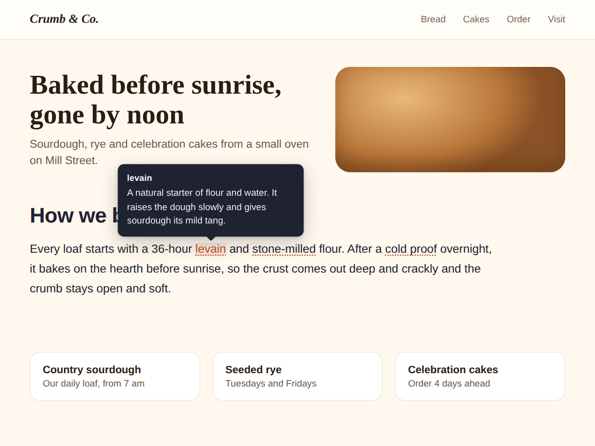

Hintly
Hover tooltips that explain words in your text
- Dotted underline on the words that need help
- Opens on hover, on tap and with the Tab key
- Looks finished before you change a thing
- Definitions are page text search engines read

What it does
Some words on your page need a short explanation: a baking term, a treatment name, a bit of jargon your customers keep asking about. Hintly lets you explain them in place. Each word you pick gets a dotted underline, and a small tooltip with its definition opens when a visitor points at it.
Phones have no hover. So a tap opens the tooltip and a tap anywhere else closes it. Keyboard users reach every word with the Tab key and close it with Esc. The tooltip stays on screen, moves below the word when there is no room above, and its arrow points at the word.
It looks finished before you change anything: a heading, a short sample text and three explained words. Click the widget in the editor, open Settings, type your text, then add each word and its definition. The underline shows at once, and the panel warns you if a word isn't in your text yet.
Pick the underline style (dotted, dashed, soft highlight or a small "i"), the text, accent and tooltip colours, the alignment and your font.
The free plan explains 3 words per widget, with no branding. Premium allows up to 60, a link inside each tooltip, a glossary list under the text, a fixed tooltip side and underlines on every match.
Price
Free
- Up to 3 terms per widget
- Hover, tap and keyboard tooltips
- Colours, font, 4 underline styles
- No branding on your site
Premium
$4/month, $36/year ($3/month billed yearly)
- Up to 60 terms per widget
- A link inside each tooltip
- Glossary list under the text
- Tooltip side and every-match marks